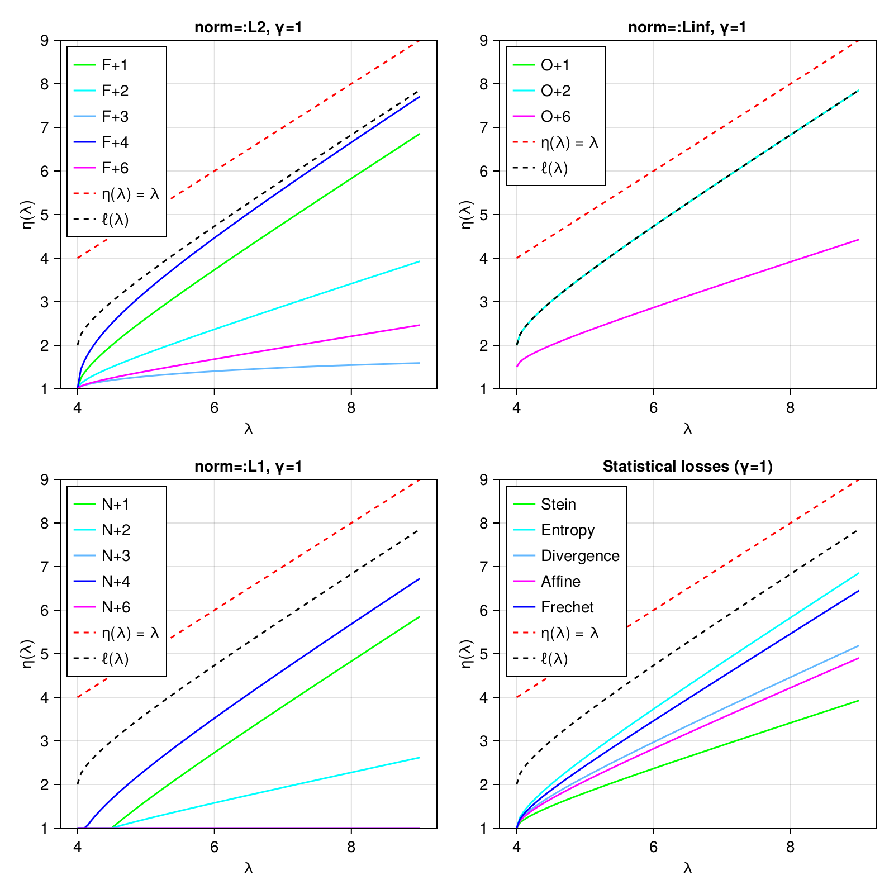

Nonlinear shrinkage estimators
Nonlinear shrinkage estimators correspond to covariance estimators based on the eigendecomposition of the sample matrix:
F = eigen(X)
# ... (transformation of eigenvalues)
F.U*(d̃ .* F.U') # d̃ is a vector of transformed eigenvaluesCurrently, there are two flavors of analytical nonlinear shrinkage:
AnalyticalNonlinearShrinkageis recommended in cases where the covariance matrix can be stored as a dense matrixfor cases where the covariance matrix is too large to handle in dense form,
WoodburyEstimatormodels the covariance matrix asΣ = σ²I + U * Λ * U'
where σ is a scalar, I is the identity matrix, U is a low-rank semi-orthogonal matrix, and Λ is diagonal. One can readily compute with this representation via the Woodbury matrix identity and the WoodburyMatrices package. This formulation approximates the covariance matrix as if all but a few (largest) eigenvalues are equal to σ². A truncated singular value decomposition of the data matrix is performed and the corresponding eigenvalues are shrunk by optimal methods for a wide variety of loss functions:
NormLossCovallows you to specify that you want to minimize some notion of loss against the "true" covariance matrixStatLossCovallows you to optimize for certain specific statistical outcomes, e.g., optimizing the accuracy of Mahalanobis distances.
The eigenvalue shrinkage function is plotted for all choices below (γ = p/n, the ratio of the dimensionality to the number of observations):

For complete details, see:
Donoho, D.L., Gavish, M. and Johnstone, I.M., 2018. Optimal shrinkage of eigenvalues in the spiked covariance model. Annals of statistics, 46(4), p.1742.